용접산업기사 (2017-08-26 기출문제)
1과목: 용접야금 및 용접설비제도
1. 다음 원소 중 강의 담금질 효과를 증대시키며, 고온에서 결정립 성장을 억제시키고, S의 해를 감소시키는 것은?
- C
- Mn
- P
- Si
(정답률: 80%)

2. 일반적인 금속의 특성으로 틀린 것은?
- 열과 전기의 양도체이다.
- 이온화하면 양(+)이온이 된다.
- 비중이 크고, 금속적 광택을 갖는다.
- 소성변형성이 있어 가공하기 어렵다.
(정답률: 79%)
3. 용접부의 저온균열은 약 몇 ℃ 이하에서 발생하는가?
- 200
- 450
- 600
- 750
(정답률: 84%)
4. 용접시 발생하는 일차결함으로 응고온도범위 또는 그 직하의 비교적 고온에서 용접부의 자기수축과 외부구속 등에 의한 인장스트레인과 균열에 민감한 조직이 존재하면 발생하는 용접부의 균열은?
- 루트 균열
- 저온 균열
- 고온 균열
- 비드 밑 균열
(정답률: 69%)
5. 다음 중 열전도율이 가장 높은 것은?
- Ag
- Al
- Pb
- Fe
(정답률: 75%)
6. 다음 재료의 용접작업 시 예열을 하지 않았을 때 용접성이 가장 우수한 강은?
- 고장력강
- 고탄소강
- 마텐자이트계 스테인리스강
- 오스테나이트계 스테인리스강
(정답률: 76%)
7. 체심입방격자의 슬립면과 슬립방향으로 맞는 것은?
- (110)-[110]
- (110)-[111]
- (111)-[110]
- (111)-[111]
(정답률: 61%)
8. 피복 아크 용접봉의 피복 배합제의 성분 중 용착금속의 산화, 질화를 방지하고 용착금속의 냉각속도를 느리게 하는 것은?
- 탈산제
- 가스 발생제
- 아크 안정제
- 슬래그 생성제
(정답률: 73%)
9. 용접부의 잔류응력을 경감시키기 위한 방법으로 틀린 것은?
- 예열을 할 것
- 용착금속량을 증가시킬 것
- 적당한 용착법, 용접순서를 선정할 것
- 적당한 포지셔너 및 회전대를 등을 이용할 것
(정답률: 88%)
10. 응력제거 풀림처리 시 발생하는 효과가 아닌 것은?
- 잔류응력이 제거된다.
- 응력부식에 대한 저항력이 증가한다.
- 충격저항성과 크리프 강도가 감소한다.
- 용착금속 중의 수소가스가 제거되어 연성이 증가된다.
(정답률: 70%)
11. 다음 용접부 기호의 설명으로 옳은 것은? (단, 네모박스 안의 영문자는 MR이다.)
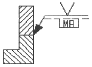
- 화살표 반대쪽에 필릿 용접한다.
- 화살표 쪽에 V형 맞대기 용접한다.
- 화살표 쪽에 토우를 매끄럽게 한다.
- 화살표 반대쪽에 영구적인 덮개판을 사용한다.
(정답률: 79%)
12. KS의 부문별 분류기호 중 “B”에 해당하는 분야는?
- 기본
- 기계
- 전기
- 조선
(정답률: 88%)
13. 다음 용접기호 중 플러그 용접을 표시한 것은?
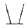
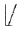
(정답률: 88%)
14. 다음 용접기호 표시를 바르게 설명한 것은?
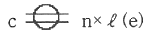
- 지름이 c이고 용접길이 ℓ인 스폿 용접이다.
- 지름이 c이고 용접길이 ℓ인 플러그 용접이다.
- 용접부 너비가 c이고 용접부 수가 n인 심 용접이다.
- 용접부 너비가 c이고 용접부 수가 n인 스폿 용접이다.
(정답률: 84%)
15. 도면에 치수를 기입할 때 유의해야 할 사항으로 틀린 것은?
- 치수는 중복 기입을 피한다.
- 관련되는 치수는 되도록 분산하여 기입한다.
- 치수는 되도록 계산해서 구할 필요가 없도록 기입한다.
- 치수는 필요에 따라 점, 선 또는 면을 기준으로 하여 기입한다.
(정답률: 87%)
16. 그림과 같이 치수를 둘러싸고 있는 사각 틀(□)이 뜻하는 것은?
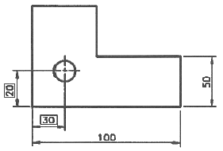
- 참고 치수
- 판 두께의 치수
- 이론적으로 정확한 치수
- 정사각형 한 변의 길이
(정답률: 78%)
17. 치수 보조기호로 사용되는 기호가 잘못 표기된 것은?
- 구의 지름 : S
- 45° 모떼기 : C
- 원의 반지름 : R
- 정사각형의 한 변 : □
(정답률: 65%)
18. 용접 기본 기호 중 “
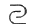
” 기호의 명칭으로 옳은 것은?- 표면 육성
- 표면 접합부
- 경사 접합부
- 겹침 접합부
(정답률: 92%)
19. 일반적으로 부품의 모양을 스케치하는 방법이 아닌 것은?
- 판화법
- 프린트법
- 프리핸드법
- 사진 촬영법
(정답률: 67%)
20. 선의 종류에 의한 용도에서 가는 실선으로 사용하지 않는 것은?
- 치수선
- 외형선
- 지시선
- 치수보조선
(정답률: 81%)
2과목: 용접구조설계
21. 가용접 시 주의해야 할 사항으로 틀린 것은?
- 본 용접과 같은 온도에서 예열을 한다.
- 본 용접사와 동등한 기량을 갖는 용접사로 하여금 가용접을 하게 한다.
- 가용접의 위치는 부품의 끝, 모서리, 각 등과 같이 단면이 급변하여 응력이 집중되는 곳은 가능한 피한다.
- 용접봉은 본 용접 작업에 사용하는 것보다 큰 것을 사용하며, 간격은 판두께의 5~10배 정도로 하는 것이 좋다.
(정답률: 85%)
22. 침투탐상 검사의 특징으로 틀린 것은?
- 제품의 크기, 형상 등에 크게 구애를 받지 않는다.
- 주변 환경이나 특히 온도에 민감하여 제약을 받는다.
- 국부적 시험과 미세한 균열도 탐상이 가능하다.
- 시험 표면이 침투제 등과 반응하여 손상을 입은 제품도 검사할 수 있다.
(정답률: 60%)
23. 필릿용접에서 다리길이가 10mm인 용접부의 이론 목두께는 약 몇 mm인가?
- 0.707
- 7.07
- 70.7
- 707
(정답률: 77%)
24. 피닝(peening)의 목적으로 가장 거리가 먼 것은?
- 수축변형의 증가
- 잔류응력의 완화
- 용접변형의 방지
- 용착금속의 균열방지
(정답률: 79%)
25. 다음 중 플레어 용접부의 형상으로 맞는 것은?
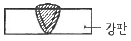
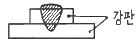
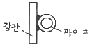
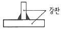
(정답률: 78%)
26. 다음 맞대기 용접이음 홈의 종류 중 가장 두꺼운 판의 용접이음에 적용하는 것은?
- H형
- I형
- U형
- V형
(정답률: 80%)
27. 주로 비금속 개재물에 의해 발생되며, 강의 내부에 모재표면과 평행하게 층상으로 형셩되는 균열은?
- 토 균열
- 힐 균열
- 재열 균열
- 라멜라티어 균열
(정답률: 68%)
28. 응력 제거 풀림에 의해 얻어지는 효과로 틀린 것은?
- 충격저항이 증대된다.
- 크리프 강도가 향상된다.
- 용착금속 중의 수소가 제거된다.
- 강도는 낮아지고 열영향부는 경화된다.
(정답률: 67%)
29. 다음 중 용접 홈을 설계할 때 고려하여야 할 사항으로 가장 거리가 먼 것은?
- 용접 방법
- 아크 쏠림
- 모재의 두께
- 변형 및 수축
(정답률: 72%)
30. 용접 구조 설계상의 주의사항으로 틀린 것은?
- 용접 이음의 집중, 접근 및 교차를 피할 것
- 용접치수는 강도상 필요한 치수 이상으로 크게 하지 말 것
- 용접성, 노치인성이 우수한 재료를 선책하여 시공하기 쉽게 설계할 것
- 후판을 용접할 경우에는 용입이 얕은 용접법을 이용하여 층수를 늘릴 것
(정답률: 91%)
31. 구조물 용접에서 조립순서를 정할 때의 고려사항으로 틀린 것은?
- 변형제거가 쉽게 되도록 한다.
- 잔류응력을 증가시킬 수 있게 한다.
- 구조물의 형상을 유지할 수 있어야 한다.
- 작업환경의 개선 및 용접자세 등을 고려한다.
(정답률: 87%)
32. 다음 용접봉 중 내압용기, 철골 등의 후판용접에서 비드 하층 용접에 사용하는 것으로 확산성 수소량이 적고 우수한 강도와 내균열성을 갖는 것은?
- 저수소계
- 일미나이트계
- 고산화티탄계
- 라임티타니아계
(정답률: 91%)
33. 다음 중 용접 구조물의 이음설계 방법으로 틀린 것은?
- 반복하중을 받는 맞대기 이음에서 용접부의 덧붙이를 필요 이상 높게 하지 않는다.
- 용접선이 교차하는 곳이나 만나는 곳의 응력집중을 방지하기 위하여 스캘롭을 만든다.
- 용접 크레이터 부분의 결함을 방지하기 위하여 용접부 끝단에 돌출부를 주어 용접한 후 돌출부를 절단한다.
- 굽힘응력이 작용하는 겹치기 필릿용접의 경우 굽힘응력에 대한 저항력을 크게 하기 위하여 한쪽 부분만 용접한다.
(정답률: 84%)
34. 강판의 두께가 7mm, 용접길이가 12mm인 완전 용입된 맞대기 용접부위에 인장하중을 3444kgf로 작용시켰을 때 용접부에 발생하는 인장응력은 약 몇 kgf/mm2인가?
- 0.024
- 41
- 82
- 2009
(정답률: 66%)
35. 모재 및 용접부의 연성을 조사하는 파괴시험 방법으로 가장 적합한 것은?
- 경도시험
- 피로시험
- 굽힘시험
- 충격시험
(정답률: 69%)
36. 다음 중 용접 비용 절감 요소에 해당되지 않는 것은?
- 용접 대기시간의 최대화
- 합리적이고 경제적인 설계
- 조립 정반 및 용접지그의 활용
- 가공불량에 의한 용접 손실 최소화
(정답률: 90%)
37. 두께 4mm인 연강 판을 I형 맞대기 이음용접을 한 결과 용착금속의 중량이 3kg이었다. 이때 용착효율이 60% 라면 용접봉의 사용중량은 몇 kg인가?
- 4
- 5
- 6
- 7
(정답률: 60%)
38. 다음 중 직류 아크 용접기가 아닌 것은?
- 정류기식 직류 아크 용접기
- 엔진 구동식 직류 아크 용접기
- 가동철심형 직류 아크 용접기
- 전동 발전식 직류 아크 용접기
(정답률: 64%)
39. 다음 그림과 같은 순서로 용젒하는 용착법을 무엇이라고 하는가?
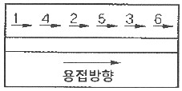
- 전진법
- 후퇴법
- 스킵법
- 캐스케이드법
(정답률: 86%)
40. 용접부의 부식에 대한 설명으로 틀린 것은?
- 틈새부식은 틈 사이의 부식을 말한다.
- 용접부의 잔류응력은 부식과 관계없다.
- 용접부의 부식은 전면부식과 국부부식으로 분류한다.
- 입계부식은 용접 열영향부의 오스테나이트 입계에 Cr탄화물이 석출될 때 발생한다.
(정답률: 82%)
3과목: 용접일반 및 안전관리
41. 일반적인 탄산가스 아크 용접의 특징으로 틀린 것은?
- 용접속도가 빠르다.
- 전류 밀도가 높으므로 용입이 깊다.
- 가시 아크이므로 용융지의 상태를 보면서 용접할 수 있다.
- 후판용접은 단락이행 방식으로 가능하고, 비철금속 용접에 적합하다.
(정답률: 72%)
42. 다음 중 허용 사용률을 구하는 공식은?
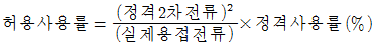
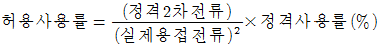
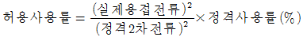
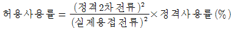
(정답률: 61%)
43. 다음 중 모재를 녹이지 않고 접합하는 용접법으로 가장 적합한 것은?
- 납땜
- TIG용접
- 피복 아크 용접
- 일렉트로 슬래그 용접
(정답률: 87%)
44. 다음 중 불활성 가스 금속 아크 용접(MIG)의 특징으로 틀린 것은?
- 후판용접에 적합하다.
- 용접속도가 빠르므로 변형이 적다.
- 피복 아크 용접보다 전류 밀도가 크다.
- 용접토치가 용접부에 접근하기 곤란한 경우에도 용접하기가 쉽다.
(정답률: 61%)
45. 가스 절단이 곤란한 주철, 스테인리스강 및 비철금속의 절단부에 철분 또는 용제를 공급하며 절단하는 방법은?
- 스카핑
- 분말 절단
- 가스 가우징
- 플라스마 절단
(정답률: 74%)
46. 가스용접 작업 시 역화가 생기는 원인과 가장 거리가 먼 것은?
- 팁의 과열
- 산소압력 과대
- 팁과 모재의 접촉
- 팁 구멍에 이물질 부착
(정답률: 60%)
47. 용접전류 200A, 전압 40V 일 때 1초 동안에 전달되는 일률을 나타내는 전력은?
- 2kW
- 4kW
- 6kW
- 8kW
(정답률: 58%)
48. 가스 용접 장치 중 압력 조정기의 취급상 주의사항으로 틀린 것은?
- 압력 지시계가 잘 보이도록 설치한다.
- 압력 용기의 설치구 방향에는 아무런 장애물이 없어야 한다.
- 조정기를 취급할 때는 기름이 묻은 장갑을 착용하고 작업해야 한다.
- 조정기를 견고하게 설치한 다음 조정 나사를 풀고 밸브를 천천히 열어야 하며 가스 누설여부를 비눗물로 점검한다.
(정답률: 93%)
49. 아크 용접기에 핫 스타트(hot start)장치를 사용함으로써 얻어지는 장점이 아닌 것은?
- 기공을 방지한다.
- 아크 발생이 쉽다.
- 크레이터 처리가 용이하다.
- 아크 발생 초기의 용입을 양호하게 한다.
(정답률: 61%)
50. 다음 중 전격의 위험성이 가장 적은 것은?
- 젖은 몸에 홀더 등이 닿았을 때
- 땀을 흘리면서 전기용접을 할 때
- 무부하 전압이 낮은 용접기를 사용할 때
- 케이블의 피복이 파괴되어 절연이 나쁠 때
(정답률: 91%)
51. 연강의 가스 절단 시 드래그(drag)길이는 주로 인자에 의해 변화하는가?
- 후열과 절단 팁의 크기
- 토치 각도와 진행 방향
- 절단 속도와 산소 소비량
- 예열 불꽃 및 백심의 크기
(정답률: 76%)
52. 연납 땜과 경납 땜을 구분하는 온도는?
- 350℃
- 450℃
- 550℃
- 650℃
(정답률: 73%)
53. 아크전류 200A, 무부하 전압 80V, 아크전압 30V인 교류용접기를 사용할 때 효율과 역률은 얼마인가? (단, 내부손실을 4kW라고 한다.)
- 효율 60%, 역률 40%
- 효율 60%, 역률 62.5%
- 효율 62.5%, 역률 60%
- 효율 62.5%, 역률 37.5%
(정답률: 48%)
54. 다음 용접법 중 전기에너지를 에너지원으로 사용하지 않는 것은?
- 마찰 용접
- 피복 아크 용접
- 서브머지드 아크 용접
- 불활성가스 아크 용접
(정답률: 75%)
55. 가스절단에서 예열불꽃이 약할 때 나타나는 현상을 가장 적절하게 설명한 것은?
- 드래그가 증가한다.
- 절단속도가 빨라진다.
- 절단면이 거칠어진다.
- 모서리가 용융되어 둥글게 된다.
(정답률: 55%)
56. 가스용접에 쓰이는 토치의 취급상 주의사항으로 틀린 것은?
- 토치를 함부로 분해하지 말 것
- 팁을 모래나 먼지 위에 놓지 말 것
- 토치에 기름, 그리스 등을 바를 것
- 팁을 바꿀 때에는 반드시 양쪽 밸브를 잘 닫고 할 것
(정답률: 93%)
57. 일반적인 용접의 특징으로 틀린 것은?
- 품질 검사가 곤란하다.
- 변형과 수축이 발생한다.
- 잔류응력이 발생하지 않는다.
- 저온취성이 발생할 우려가 있다.
(정답률: 83%)
58. 용접의 분류에서 압접에 속하지 않는 용접은?
- 저항 용접
- 마찰 용접
- 스터드 용접
- 초음파 용접
(정답률: 55%)
59. 일반적인 정류기형 직류 아크 용접기의 특성에 관한 설명으로 틀린 것은?
- 소음이 거의 없다.
- 보수 점검이 간단하다.
- 완전한 직류를 얻을 수 있다.
- 정류기 파손에 주의해야 한다.
(정답률: 64%)
60. 불가시 아크 용접, 잠호 용접, 유니언 멜트 용접, 링커 용접 등으로 불리는 용접법은?
- 전자 빔 용접
- 가압 테르밋 용접
- 서브머지드 아크 용접
- 불활성가스 아크 용접
(정답률: 85%)